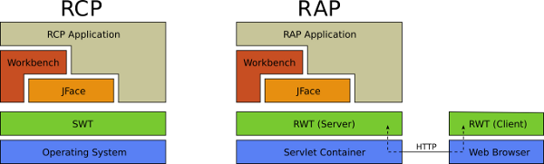
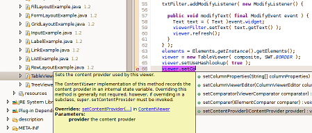

RCP applications in a web browser
The Rich Ajax Platform lets you build rich, Ajax-enabled Web applications
by using the Eclipse development model, plug-ins with the well known
Eclipse workbench extension points and a widget toolkit with
SWT API.
Existing RCP applications can be run as Web applications with only minor
changes.
What is RAP Screencast - 01:29min
You need the latest Flash player to watch the screencast.
SWT, JFace and Workbench API
RAP is very similar to
Eclipse RCP,
but it has an alternative implementation of
the SWT API (called RWT) which renders the widgets remotely in a web
browser.
The RAP application runs on a servlet container and clients can access
the application with standard web browsers.

Compatible with all major web browsers
RAP runs out of the box without any plugins in the following web browsers.
|
|
|
|
|
| Firefox 2+ |
IE 6+ |
Safari 3+ |
Chrome 3+ |
Opera 9+ |
Single Sourcing
A popular use case for RAP is the development of rich clients and web
clients from a single code base, also called “Single Sourcing”.
Application vendors are increasingly required to provide both desktop
and web clients for their customers.
But these platforms are based on very different technologies which
generally demand different programming paradigms and skills that make
it difficult to reuse code.
The need for specialized development skills and for implementing the
same thing twice increases the cost of production without adding
substantial value to the project.
The Rich Ajax Platform (RAP) was designed to address exactly these
problems for the Eclipse world.
RAP allows Java and Eclipse developers to reuse their
existing skills through a Java-based development model for web-clients.
Furthermore, RAP maximizes code reuse by including the largest-possible
web-enabled subset of the Rich Client Platform.
Feels like home
Developing RAP applications is very similar to traditional RCP
development.
Applications are developed as OSGi-bundles entirely in Java and use the
same API and extension points than their RCP counterparts.
You take advantage of the award winning
Java Development Tools (JDT)
and the
Plug-in Development Environment (PDE)
provided by Eclipse.
Everything from development to launching, debugging and exporting
to standard .war files works right out of the Eclipse IDE.

In addition, we provide the
RAP Tooling
which contains useful tools, templates and documentation.
It simplifies the installation of the RAP target platform and the
launching of RAP applications from Eclipse.
A user guide is part of the Tooling and can also be accessed
online.